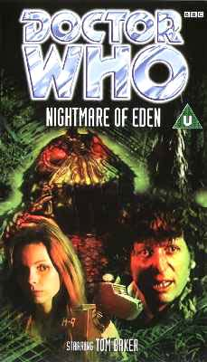
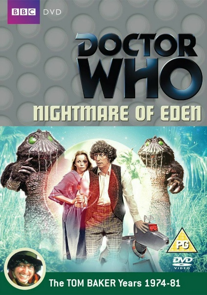
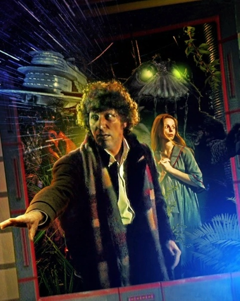
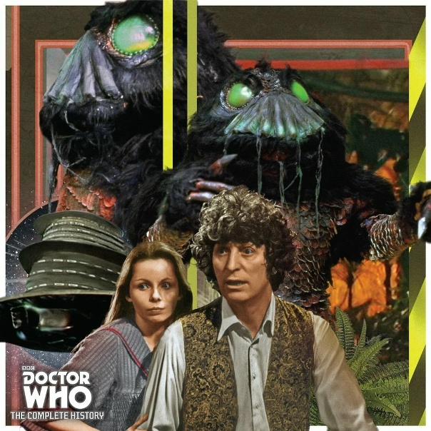

Эра Четвертого Доктора (17 сезон)
<<< НАЗАД ||| 4. Кошмар Эдема ||| ДАЛЬШЕ >>>
Субтитры: Русские и Английские |  |
|---|---|
с обновленными спецэффектами Субтитры: Русские и Английские | |
с обновлением визуальных эффектов (cunningmunki) Субтитры: отсутствуют | |
Nightmare of Eden
Дата выхода: 24 ноября - 15 декабря 1979
Формат: 4 эпизода по 25 мин.
 |  |
Космический лайнер «Императрица» сталкивается с кораблём контрабандистов, и два судна застревают друг в друге, схлопнув пространство между измерениями. Среди груза — редкие экземпляры с планеты Эдем, а среди пассажиров — торговец враксойном, смертельным наркотиком, который, как выясняется, добывают из тел самих существ с Эдема, мандрелов. Серия известна тем, что впервые в «Докторе Кто» открыто заговорила о наркотрафике — и это в семейном шоу. Продюсер Грэм Уильямс настоял на социальной теме, а Дуглас Адамс приправил её своим юмором, из-за чего серия получилась неровной: жёсткая антинаркотическая мораль соседствует с откровенно комедийными мандрелами, выглядящими скорее нелепо, чем пугающе.
 VHS - январь 1999 |  DVD - апрель 2012 |  Blu-ray - 20 декабря 2021 * Версия в нашей группе |
|---|





Трейлер: